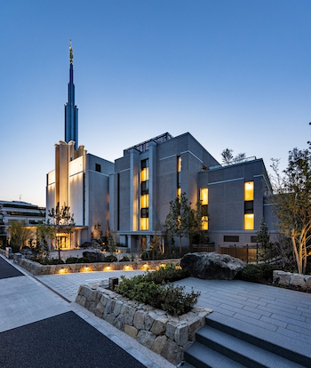

Temple Album
Home
Old
New
Large
Small
Home

Tokyo, Japan temple
Manaus, Brazil Temple
San Diego, California Temple
Salt Lake, Utah Temple
Campinas, Brazil Temple
Porto Alegre, Brazil Temple
São Paulo, Brazil Temple
Logan, Utah Temple
San Francisco, California Temple